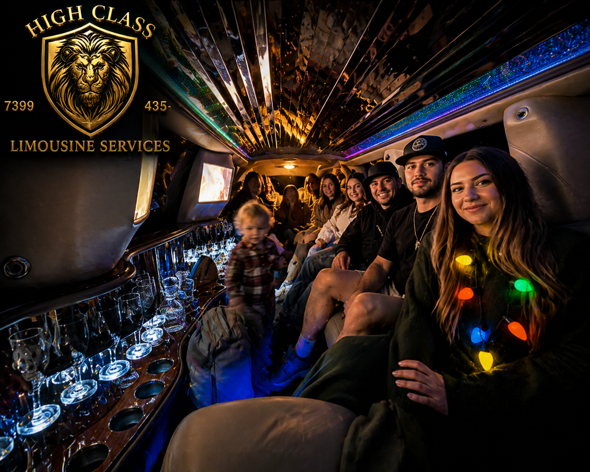

The bride. Her people. One black stretch. The night gets a soundtrack.
High Class Limousine Services runs bachelorette party limos across Vernal, the Uintah Basin, and on to Salt Lake City for the bigger weekends. Up to 10 passengers, multi-stop routing built around your itinerary, $135–$200 per hour with a 3-hour minimum (most bachelorette nights run $450–$900). Locally owned. Available 7 days a week. Call (435) 219-9447 to lock in your date.
A bachelorette party limo isn't really about the ride. It's about what happens because of the ride. Nobody driving. Nobody sober at the back of the group, watching the rest of the night in the rearview mirror. The bride doesn't have to worry about parking, about Ubers, about whether the after-party is across town. She closes the door at her house, opens it again at the next stop, and somewhere in between, the night gets to be the night.
Our bachelorette bookings in Vernal run the spectrum — quiet wine-and-dinner evenings around the Basin, full-throttle weekends down to Salt Lake, and everything between. The vehicle stays the same: black stretch limousine, ten leather seats, fiber-optic mood lighting that the bride controls from her seat, premium sound system loaded with whatever playlist your maid of honor has been building for six weeks. The only thing that changes is the route.
We pick up the bride at her house first, then collect the rest of the party from wherever they are — across Vernal, in Naples, out in Maeser, down to Roosevelt or Duchesne if the maid of honor flew in early. No "everyone meet at the restaurant." No three cars showing up at three different times. The party starts the moment the bride gets in.
Multi-pickup routing is included on every booking. Just send us the addresses in the order you want them collected.
Most Vernal-area bachelorette nights look something like this: pickup at 6, dinner reservation at 7 (Antica Forma, The Vernal Brewing Co., or one of the steakhouses), drinks at 9, somewhere with a dance floor by 10, back-to-the-Airbnb run after midnight. We've routed it dozens of times. We know which Vernal restaurants have valet, which need curbside, and which don't have a lot we can fit a stretch into — we'll pick the closest legal stop and walk you in.
For SLC weekend bachelorettes, the most common pattern is: Saturday morning pickup in Vernal, drive down with brunch stops along the way, hotel drop-off in SLC. Sunday is whatever the bride wants. We've done spa days, day-drinking on Main Street, dinner reservations in Park City, and a couple of memorable rooftop pool circuits. Tell us the plan, we drive it.

Step in: leather everywhere, gold fiber-optic lighting glowing along the ceiling, sound system warmed up, climate already set to whatever you asked for. The bar is stocked with chilled water and champagne flutes. Anything beyond that is BYO — bring what you want (legal in Utah, 21+ guests only), we'll keep it cold.
Bluetooth your maid of honor's phone to the system. Crank it. The cabin is acoustically tuned to actually sound good loud — none of that tinny rattle you get in a party van.
Most Vernal-area bachelorette parties book a 4–6 hour package at $135–$200/hr depending on weekday or weekend, putting the night in the $540–$1,200 range before gratuity. A typical itinerary at that price covers: pickup, dinner, two bar/lounge stops, dancing, and the ride home.
For the full Vernal-to-SLC weekend, expect $700–$1,400 depending on hours, mileage, and how many stops Saturday adds up to. We quote those as a flat package, not pure hourly, so the price doesn't balloon if traffic on Parley's adds an hour.
Gratuity (15–20%) and tax are added at booking. No hidden fees, no per-mile surcharges, no cleanup fees unless something genuinely beyond ordinary happens (which, for the record, has happened exactly twice and both times involved tequila).
For the full pricing breakdown across all our services, see how much a limo costs in Vernal.
$135–$200 per hour with a 3-hour minimum, so most bachelorette nights run $450–$900. A full Vernal-to-SLC weekend lands $700–$1,400. Gratuity (15–20%) and tax added at booking.
Up to 10 — a bride plus 7–9 of her people, comfortably. Larger parties can split across two trips or pair the limo with a follow-vehicle; call us to plan it.
For parties of 21+ guests, yes — under Utah law. We provide chilled water and champagne flutes. You bring whatever else; we'll keep it cold.
Yes. One driver, one vehicle, the entire booking. We don't hand you off to a different driver halfway through. Same uniformed chauffeur picks you up at the start and drops you off at the end.
For Vernal-area bachelorettes: 3–4 weeks ahead is comfortable. For SLC weekend bachelorettes that fall on a holiday or graduation weekend: 6–8 weeks. Call (435) 219-9447 to check the date.
Tell us the date and we'll build the night around it.